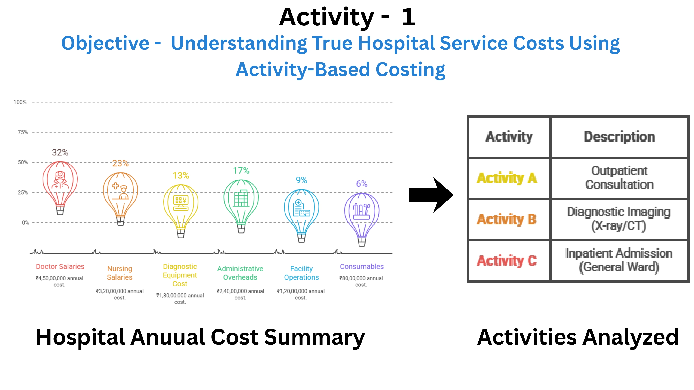
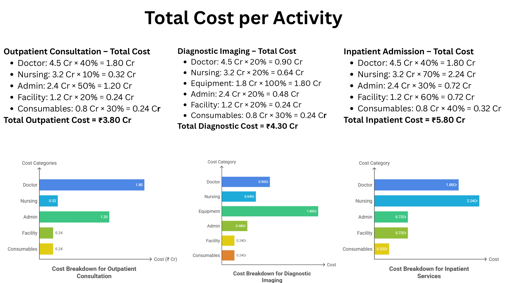
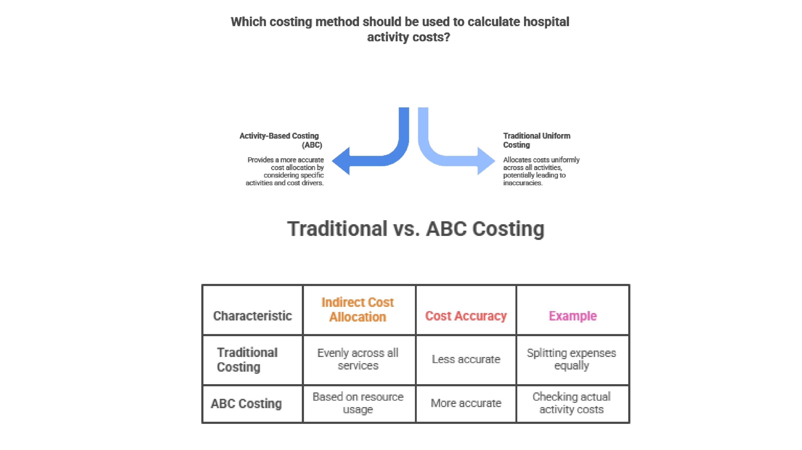
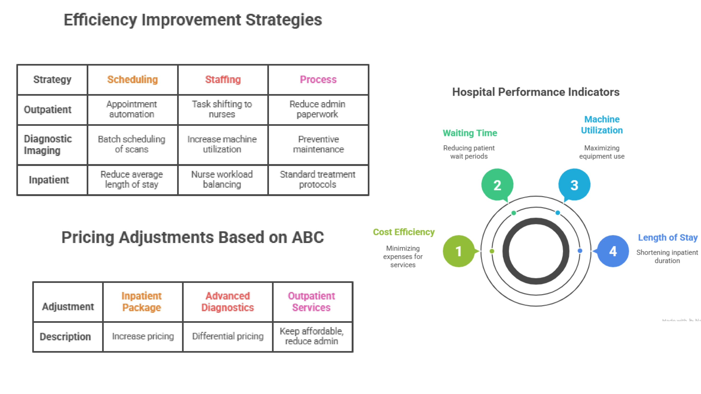
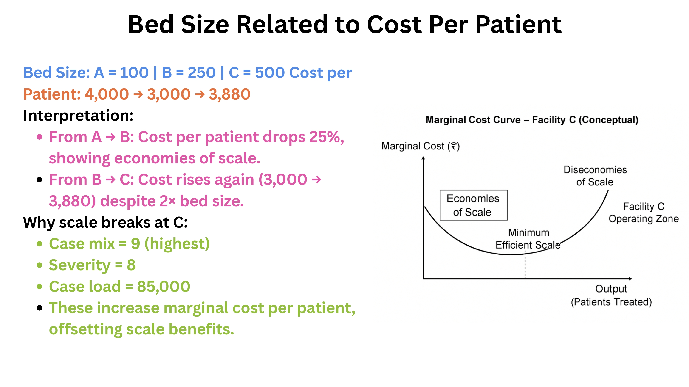
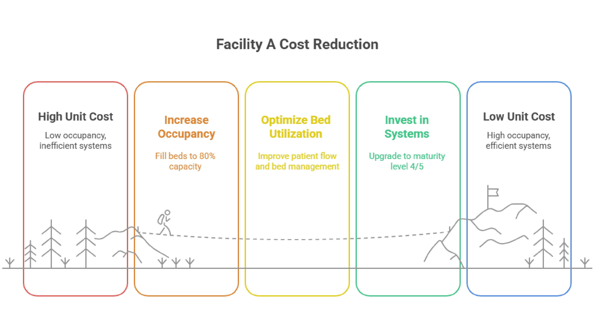
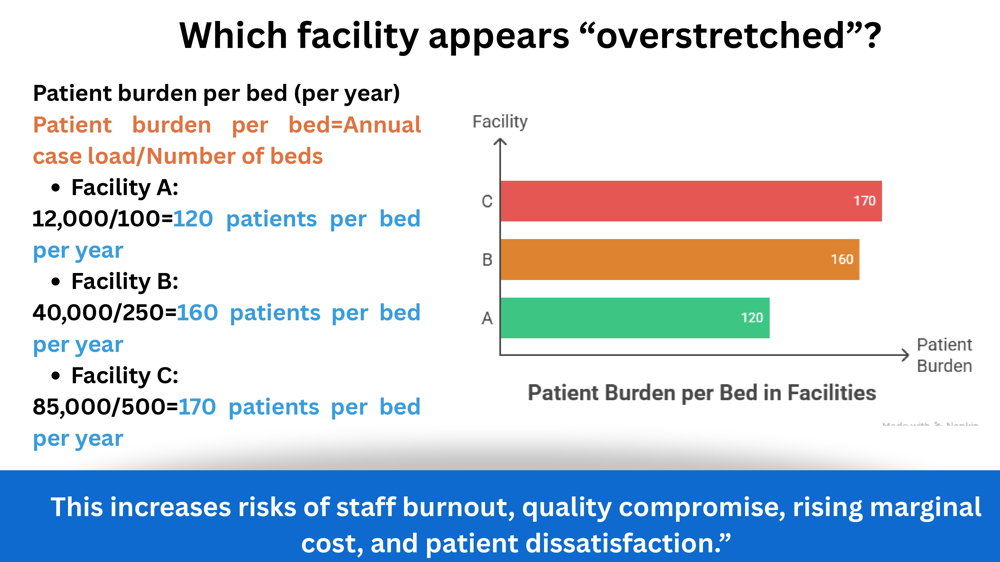

```
 ```
```
Project 2: AI-Driven Pharma Planning
Problem: Static planning leads to inaccurate forecasting.
Approach: Built AI simulation model for scenario analysis.
Impact: Improved forecast accuracy and reduced planning cost.
```
Designing intelligent healthcare systems using AI, data analytics, and behavioral science
Exploring how artificial intelligence and data analytics can transform healthcare systems into adaptive, real-time decision environments. This portfolio includes projects focused on predictive modeling, behavioral insights, operational analytics, and public health strategy to improve decision-making and patient outcomes.
Excel • SQL • Power BI • Tableau • Python • Canva
Problem: Lack of cost transparency leads to inefficient hospital resource allocation.
Approach: Applied Activity-Based Costing (ABC) to allocate costs across services.
Key Insights:
Impact: Enables cost optimization and improved decision-making.







Problem: Static planning leads to inaccurate forecasting.
Approach: Built AI simulation model for scenario analysis.
Impact: Improved forecast accuracy and reduced planning cost.
```
Problem: Static surveys fail to capture real human behavior.
Approach: Combined AI + behavioral science.
Impact: Enables adaptive healthcare interventions.
Problem: Lack of visibility into hospital operations.
Approach: Built Power BI dashboard analyzing cost and performance.
Impact: Supports data-driven hospital decisions.
Problem: High undiagnosed hypertension burden and limited rural access.
Approach: Applied cost-benefit and demand-supply analysis.
Impact: Designed scalable public health intervention strategy.